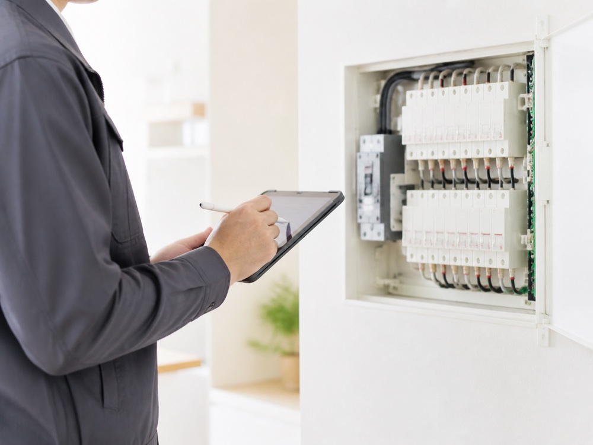
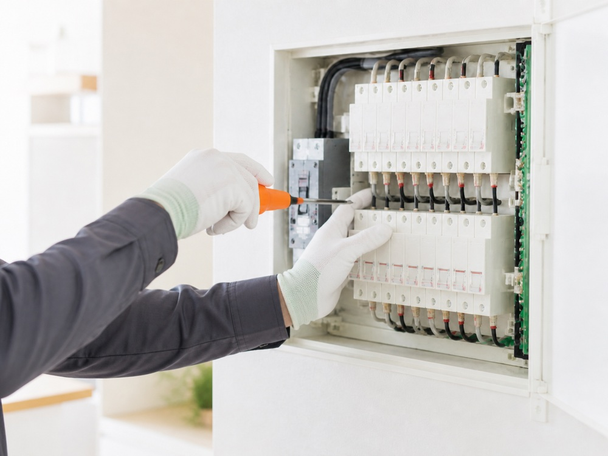
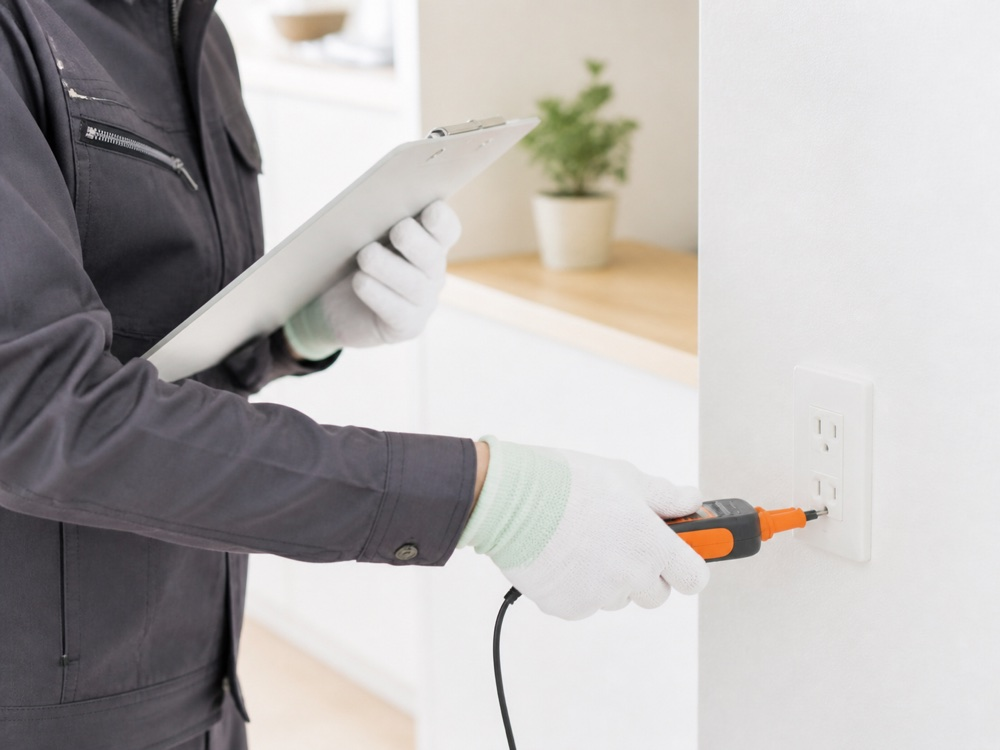

Work flow
施工の流れ
ご相談内容を丁寧にお伺いし、現地確認・お見積もりをご案内します。
お問い合わせから施工・お引き渡しまで、責任をもって対応いたします。
- STEP 01
お問い合わせ
工事内容やお困りごとをお聞かせください。
- STEP 02

現地確認・お見積り
必要に応じて現場を確認し、工事内容を整理します。
- STEP 03

施工
安全に配慮し、丁寧かつ確実に作業を進めます。
- STEP 04

確認・お引き渡し
仕上がりと動作を確認し、安心して使える状態でお渡しします。